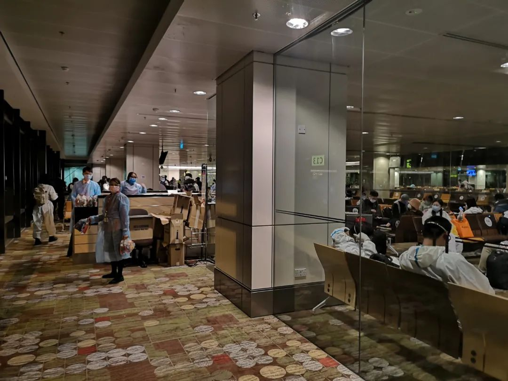

人已经到广州了，拖更严重型患者已经拖下了不止一件重要的事情留在备忘录上。看记录里上一次还在备考的时候，吃一个离谱的减肥餐然后骂骂咧咧地写下了一篇推文。现在想那时候，觉得仿若是在两个世界里。没有更新公众号的时间里，人际的密集程度让我终于感受到了什么是毕业季、在将要离开的时候有多少未完的事情需要去办。虽然所有的这些，在今天的推文里只会写到哪算哪我根本没有雄心壮志说要在这篇推文里详细叙述自五月份以来的多少错愕与变动。At least, 想写一些聪明的内容，那就从现在开始往前写吧。从新加坡离开是5月18号的事情，是日亦即我年假开始的那一天。做出这一个决定来自于在8号看到了一则北京的会议通知，会议说9号开始报名。在9号到18号的日子里，有琐碎的事情如选入境城市和获得双阴性检测报告，也有深刻的事情如衡算未来三年的去留，以及很消耗精神的事情和人好好地告别。更久之前的事情是在上一次骂完减肥餐之后，两粒酱给我下达通牒：不减到xxx不见面。现在在广州，看起来是一个不可能完成的任务。18号，准点率96%的飞机，在Ming和我去机场的时候，因为新加坡和广州的恶劣天气而大面积进出港延误。我们在携程上看前序航班和前前序航班，南航直接换了一架飞机开到新加坡来接我们。于是后来这趟航班的准点率就变成了94%
预计晚上十点前到广州的时间，硬生生地被拖到了凌晨三点。等到出关做完各种流行病学调查和核酸检测，去坐大巴的时候已然看到天边开始吐鱼肚白。迎着朝霞进入隔离酒店，朝霞和身着重装防护服的医护人员一起把我们往大厅赶。等到我四仰八叉躺倒在隔离酒店的大床上，时间已经到了早上八点。等到中午点外卖的时候，点了一份沙县小吃：老干妈炒饭卧荷包蛋，飘香拌面和一块豆干。两粒酱说当时的表情就跟没吃过饭一样。说起沙县小吃，我是有特殊感情的。特殊不在于沙县有多么好吃，而在于之前在汉口大智路，每一次去看话剧的时候，买完话剧票都是我巨穷无比的时候。大智路沿线都是高级的餐室和小酒馆，唯有一家地铁站出口的沙县小吃，还算在可以承受的范围内。于是在吃到沙县的时候，就会想到去中南剧院看话剧的日子，肚子里装着7块钱的拌面，然后买着一楼最便宜价位的票朝着舞台上眺望。住的酒店在三元里，三元里就是中学历史书上三元里抗英发生的地方。三元里离广州站很近，从地图上看，铁轨离我最近的地方都不到四百米。其场景是铁轨上火车的进站鸣笛声由远及近。开着空调，久违地感觉到了身体相对于外界的温度流失。这种感觉是在新加坡没有的。新加坡的冷气不管再怎么猛烈，也只是觉得外界的寒意侵入到了身体里，而没有这种身体上的温度向外界流失。这种感觉以往常常在春秋季节出现，是一层秋雨一层寒的感受。也许这正是广州的环境宜居之一点。最近晚上的睡眠，甚至不需要戴眼罩和耳塞。在UTown的寝室里，我自从有眼罩和耳塞以来就没有在睡觉的时候摘下来过——很大程度上还依赖于熟悉的睡衣来给我营造一个理想的入眠环境尽管那件睡衣已经毛到让我几次想扔掉又从垃圾桶里捡回来。隔离酒店的房间外是一个老旧的居民区，应该建于九五年以前：没有装防盗窗、墙缘用细碎的小瓷砖贴着、楼道里也不安装窗户和电梯。如果能在这样的小区找到生活气息，那想必是很老广的生活。下午睡觉，我把窗帘拉到只剩一条缝隙，时而传来的鸟鸣声让人一时恍惚有树影婆娑；晚上我坐在桌前打字，远处路上飞驰而过的引擎和行人市井，让人觉得熟悉的世界又回来了。在坡的同学可能会知道我有多么重度依赖眼罩和耳塞，因为外面经过的高速公路有多么吵、房间里的空调有多么吵。视觉和听觉在我的房间里失调，视觉上看到的有多么百万听觉上就有多么的惨绝人寰。所以才会觉得不需要眼罩和耳塞维持睡眠是多么不容易的事情。在广州吃得也不错，因为酒店可以点外卖也可以收快递。在隔离第一天我就快递了7瓶1.5升的怡宝到房间，感觉自己就像是马上可以再盖十个深圳赛格广场的民工。盘算了一下去年八月在新加坡隔离时候的餐，再看看现在：我自己点的沙县小吃、Lumen推荐的鸭仔饭、Yingtao点的一出小龙虾、两粒酱外卖来的山竹和去皮剥壳的叶子、还有和Ming拼单的一手点都德。有个表情包是：减肥失败，怪就怪中国菜太好吃。我现在的想法当如是。关于具体为什么这么快速而又决绝地回国，今天的篇幅只留一个感受吧：所做的这些决定没有哪一个是冲动做出的无不在目前所能的范围内想到了其极。并且这一次贡献的不仅是我，还有很多的朋友。这一项决定也不是一个长期的确定数，也还有很多回旋的可能。但第一步已经走出来了，希望接下来一如初决定时的勇气与缜密。